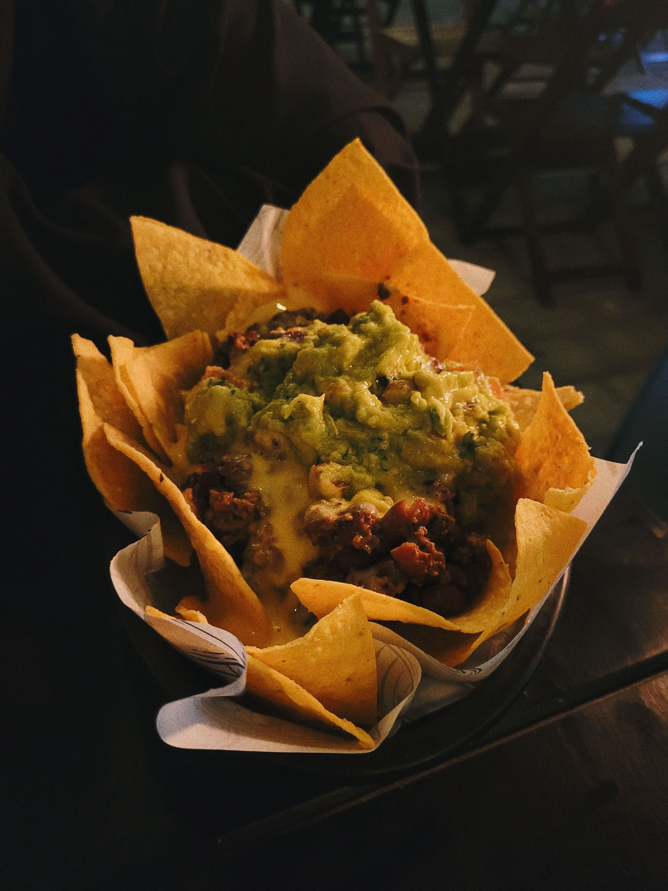

Nachos

Ingredients
- Tortilla chips - 150 grams
- Cheddar cheese - 150 grams
- Tomato - 1, diced
- Jalapenos - 30 grams, sliced
- Salsa - 3 tbsp
- Sour cream - 2 tbsp
Steps
- Preheat the oven to 180°C
- Spread the tortilla chips evenly on a baking tray
- Sprinkle the grated cheddar cheese over the tortilla chips
- Add the diced tomato and sliced jalapeños
- Bake for 5 to 10 minutes until the cheese has melted
- Serve with salsa and sour cream
Home